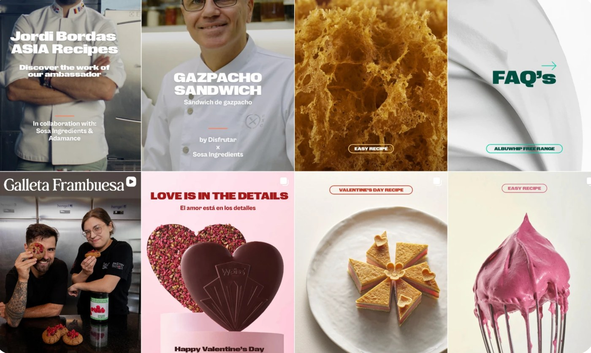
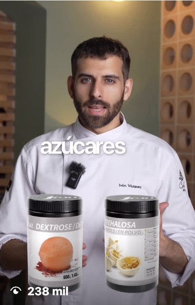
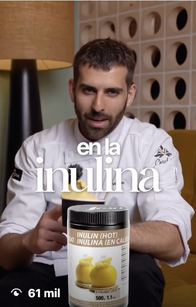
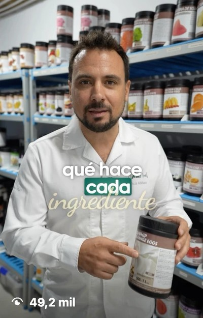
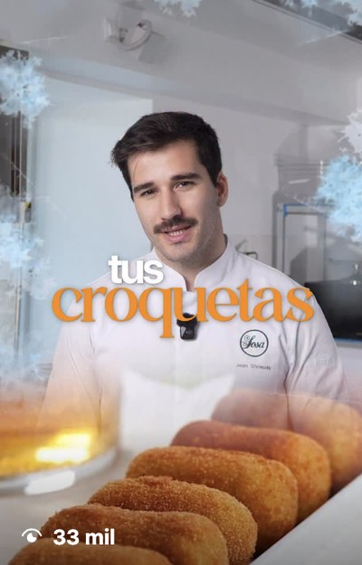
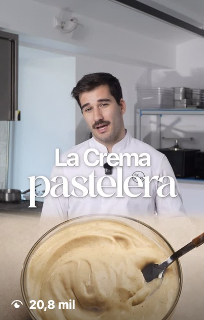

Artículo publicado el 16 de junio de 2026 y actualizado en noviembre de 2026.
Cuando empezamos a trabajar con Sosa Ingredients, la marca ya tenía casi 90.000 seguidores en Instagram, pero su contenido seguía la línea que vemos en muchas grandes empresas: publicaciones muy cuidadas, pero con una comunicación corporativa que apenas generaba interés en personas nuevas y que mantenía la cuenta estancada. Al cambiar esa forma de comunicar por vídeos que aportan valor a su público, la cuenta pasó de 90.000 a 100.000 seguidores en tres meses.
En este artículo te contamos cómo era su contenido antes, por qué la comunicación corporativa que suelen seguir las grandes empresas no funciona tanto en redes y qué cambiamos para que la marca empezara a crecer y a notar que su impacto en redes aumenta.
Quién es Sosa Ingredients
Sosa Ingredients es una empresa líder en ingredientes premium para cocina y pastelería: texturizantes, aromas, azúcares técnicos, liofilizados y muchos otros productos que utilizan cocineros y reposteros de alto nivel. No son ingredientes de uso cotidiano, sino productos muy técnicos que necesitan conocimiento y precisión para sacarles todo el partido.
Es una empresa muy grande, con muchos años de experiencia y una reputación que la ha llevado a estar presente en cocinas de todo el mundo. Trabaja con algunos de los mejores restaurantes, como Disfrutar, elegido mejor restaurante del mundo en la lista The World's 50 Best Restaurants de 2024 y con el que colabora habitualmente.
Para que te hagas una idea de hasta dónde llegan sus productos, te contamos una anécdota muy curiosa: fuimos a Galicia a grabar con el chef con dos estrellas Michelin Manuel Costiña, que ha pasado de 35.000 a más de 140.000 seguidores en Instagram, y en su cocina nos encontramos un producto de Sosa, a más de 1.000 kilómetros del lugar donde grabábamos el contenido con la marca.
Cómo era su contenido antes
Antes de trabajar con nosotros, la comunicación de Sosa en redes era muy corporativa. Seguir una estrategia de contenido corporativa tiene sus pros y sus contras:
- Pros. Es un contenido más inspiracional y transmite una imagen muy premium.
- Contras. Es un contenido con el que cuesta conectar y que no llega a personas nuevas, algo que complica el crecimiento de la cuenta.
Así se veía la cuenta antes: un contenido muy cuidado y estético, con una línea claramente corporativa.

En ese punto, la estrategia se basaba sobre todo en carruseles. Los carruseles son una herramienta de Instagram que funciona muy bien, pero su función principal es nutrir al público que hemos captado con los reels. Es una estrategia de nutrición: si solo subimos carruseles, nutriremos a quien ya nos sigue, pero no llegaremos a gente nueva.
Las historias sirven para vender a tu comunidad más fiel, los carruseles para nutrirla y los reels para atraer a personas nuevas.
También habían hecho colaboraciones con otros chefs. Es un formato que puede sumar, pero tiene inconvenientes: resulta bastante caro, la autoridad no depende de la marca y, al final, es como alquilar la audiencia de otra persona.
Por último, también habían apostado por vídeos con una producción muy cuidada y estética. Este tipo de vídeos son muy bonitos y siguen contribuyendo a esa visión corporativa de la marca, pero carecen de estrategia y es difícil llegar a gente nueva con ellos: no aportan ninguna información ni ningún valor, son únicamente inspiracionales. Está bien, pero no es lo mejor si lo que quieres es crecer.
Por qué la comunicación corporativa no funciona en redes
Durante mucho tiempo se ha pensado que, si eres una gran empresa, tu comunicación tiene que ser seria y distante, para marcar esa diferencia con el resto. En redes sociales esto ya no funciona. Lo que hace crecer una cuenta hoy es generar conexión con quien te ve, conseguir que te siga, que te vaya conociendo con cada vídeo y que, con el tiempo, acabe confiando en ti y comprándote.
La comunicación corporativa tiene otro problema: está pensada para quien ya te conoce. Cuando todos los vídeos hablan del producto y buscan vender, solo interesan a tus clientes actuales, y apenas llegan a personas nuevas. El resultado es un crecimiento lento y una comunidad que se estanca.
Para que algo funcione en redes hay que aportar valor y explicar cosas. Si lo único que haces es pedir a la gente que te compre, le estás pidiendo que haga algo por ti, y eso es mucho pedir a alguien que todavía no te conoce. Es mucho más fácil empezar regalando: regalar información, regalar conocimiento. Por eso conviene hacer vídeos pensados para aportar valor y, después, otros vídeos que sí vendan. Pero lo primero que necesitas es captar a la gente, y a la gente se la capta dándole información.
Qué cambiamos
Cuando vimos la situación, tuvimos claro que había que hacer un cambio radical en la forma de comunicar y apostar por vídeos hablados a cámara que aportaran valor al público ideal de la marca: chefs, pasteleros y profesionales de restaurantes de alto nivel.
Eso sí, sin dejar de lado el producto. En redes sociales no sirve de nada conseguir millones de visualizaciones con temas genéricos que no generan negocio, así que en casi todos los vídeos el producto de Sosa aparece desde el gancho. Lo que cambia es el enfoque: en lugar de vender el producto, el vídeo enseña a usarlo. Hemos hecho vídeos con consejos sobre azúcares técnicos para heladería, sobre cómo usar la inulina, sobre cómo congelar croquetas o sobre cómo preparar una buena crema pastelera, entre muchos otros.
En los vídeos aparecen distintos chefs del equipo de Sosa, que la marca tiene en plantilla para desarrollar recetas y darla a conocer.
Al tratarse de una empresa grande, con sus propias normas de comunicación, había que encontrar un equilibrio: abrir la comunicación mucho más de lo que lo hacía antes, pero sin perder la línea de la marca. Por eso la revisión de los guiones con el cliente es una parte muy importante del proceso.
El trabajo se organiza en varias fases. Primero, un onboarding en el que conocemos el público de la marca y sus objetivos, y definimos la estrategia. Después buscamos las ideas, que se basan en vídeos que ya han funcionado y que adaptamos y mejoramos para la marca, y redactamos los guiones. A continuación revisamos esos guiones junto al cliente para ajustarlos a su forma de comunicar. Y, por último, grabamos, editamos y publicamos. En una sola mañana, de menos de seis horas, grabamos el contenido de dos meses.
Los resultados
El cambio se notó muy rápido. En sus tres primeros meses de trabajo con nosotros, la cuenta de Sosa pasó de 90.000 a 100.000 seguidores en Instagram.
Los vídeos también reflejan ese cambio. A pesar de tratarse de un sector muy de nicho, algunos han llegado a las 238.000 visualizaciones, y otros han conseguido entre 20.000 y 61.000. Pero, más allá de las cifras, lo más importante es la interacción: muchos de esos vídeos han generado un gran número de comentarios de profesionales interesados en los productos.





Beneficios para la marca
Estos son los principales beneficios que ha notado la marca:
- Ahorro de tiempo. En una sola mañana, de menos de seis horas, se graba el contenido de dos meses, y los guiones se revisan con el cliente para mantener la línea de la marca.
- Resultados. La cuenta ha pasado de 90.000 a 100.000 seguidores en tres meses y algunos vídeos han llegado a las 238.000 visualizaciones, en un sector muy de nicho.
- Una comunicación acorde a cómo funcionan hoy las redes. La marca deja atrás una comunicación corporativa que ya no conecta y aporta valor en cada vídeo, mostrando cómo utilizar sus productos, que es justo lo que ese público necesita.
- Llegar a nuevos profesionales. Los vídeos atraen a chefs, pasteleros y profesionales que todavía no conocían la marca, y generan muchos comentarios de personas interesadas en los productos.
- Contenido propio y profesional. Sosa ya no depende de creadores externos para tener presencia en redes, y cuenta con un contenido que transmite la imagen que corresponde a una marca de su nivel, con una grabación y una edición cuidadas.
Conclusión
El caso de Sosa Ingredients demuestra que una gran empresa no tiene por qué comunicar de forma distante en redes sociales. Al pasar de una comunicación corporativa centrada en vender a vídeos que enseñan a sus clientes a sacar partido a sus productos, la marca ha conseguido crecer de 90.000 a 100.000 seguidores en tres meses y conectar con un público nuevo, sin dejar de hablar de su producto en cada vídeo.
Si quieres ver otro caso en un sector muy especializado, puedes leer el de De Profundis, una tienda de material de buceo técnico que pasó de menos de 1.000 a más de 6.200 seguidores y que hoy recibe clientes cada día desde Instagram.
Y si estás pensando en dar el paso con tu empresa, cuéntanos tu proyecto y vemos juntos por dónde empezar.
Preguntas frecuentes
¿Puede una gran empresa crecer en redes sociales con vídeos hablados a cámara?
Sí. En el caso de Sosa Ingredients, pasar de una comunicación corporativa a vídeos hablados a cámara que aportan valor hizo que la cuenta creciera de 90.000 a 100.000 seguidores en tres meses. La clave está en encontrar el equilibrio entre una comunicación más cercana y la línea de la marca.
¿Por qué no funcionan los vídeos corporativos en Instagram?
Porque suelen estar pensados para vender el producto a quien ya conoce la marca. Sin un gancho al inicio ni una estructura que retenga la atención, apenas llegan a personas nuevas. En redes funciona mejor el contenido que aporta valor y genera conexión con quien lo ve.
¿Se puede hablar del producto en los vídeos sin que parezcan publicidad?
Sí. En los vídeos de Sosa Ingredients el producto aparece desde el gancho, pero el enfoque es enseñar a usarlo: consejos, técnicas y recetas. Así el vídeo aporta valor al espectador y, al mismo tiempo, da a conocer el producto de forma natural.
¿Sirven los carruseles y las colaboraciones con otros creadores para crecer en Instagram?
Funcionan bien como complemento, pero no como base de la estrategia. Los carruseles sirven para nutrir a la comunidad y las colaboraciones aprovechan el alcance de otros creadores, pero esa audiencia no es tuya. Para atraer a personas nuevas de forma constante hace falta contenido propio en formato reel.